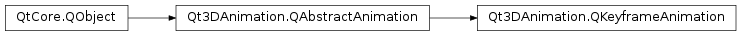

Qt3DAnimation.QKeyframeAnimation¶
Synopsis¶
Functions¶
- def
addKeyframe(keyframe) - def
easing() - def
endMode() - def
framePositions() - def
keyframeList() - def
removeKeyframe(keyframe) - def
setKeyframes(keyframes) - def
startMode() - def
target() - def
targetName()
Slots¶
- def
setEasing(easing) - def
setEndMode(mode) - def
setFramePositions(positions) - def
setStartMode(mode) - def
setTarget(target) - def
setTargetName(name)
Signals¶
- def
easingChanged(easing) - def
endModeChanged(endMode) - def
framePositionsChanged(positions) - def
startModeChanged(startMode) - def
targetChanged(target) - def
targetNameChanged(name)
Detailed Description¶
A class implementing simple keyframe animation to a
PySide2.QtGui.QTransformA
Qt3DAnimation.QKeyframeAnimationclass implements simple keyframe animation that can be used to animatePySide2.QtGui.QTransform. The keyframes consists of multiple timed QTransforms, which are interpolated and applied to the targetPySide2.QtGui.QTransform.PySide2.QtCore.QEasingCurveis used between keyframes to control the interpolator.Qt3DAnimation.QKeyframeAnimation.RepeatModecan be set for when the position set to theQKeyframeAnimationis below or above the values defined in the keyframe positions.
-
class
PySide2.Qt3DAnimation.Qt3DAnimation.QKeyframeAnimation([parent=nullptr])¶ Parameters: parent – PySide2.QtCore.QObjectConstructs an
QKeyframeAnimationwithparent.
-
PySide2.Qt3DAnimation.Qt3DAnimation.QKeyframeAnimation.RepeatMode¶ This enumeration specifies how position values outside keyframe values are handled.
Constant Description Qt3DAnimation.QKeyframeAnimation.None The animation is not applied to the target transform. Qt3DAnimation.QKeyframeAnimation.Constant The edge keyframe value is used. Qt3DAnimation.QKeyframeAnimation.Repeat The animation is repeated.
-
PySide2.Qt3DAnimation.Qt3DAnimation.QKeyframeAnimation.addKeyframe(keyframe)¶ Parameters: keyframe – PySide2.Qt3DCore.Qt3DCore::QTransformAdds new
keyframeat the end of the animation. ThePySide2.QtGui.QTransformcan be added to the animation multiple times.
-
PySide2.Qt3DAnimation.Qt3DAnimation.QKeyframeAnimation.easing()¶ Return type: PySide2.QtCore.QEasingCurveSee also
PySide2.Qt3DAnimation.Qt3DAnimation::QKeyframeAnimation.setEasing()
-
PySide2.Qt3DAnimation.Qt3DAnimation.QKeyframeAnimation.easingChanged(easing)¶ Parameters: easing – PySide2.QtCore.QEasingCurve
-
PySide2.Qt3DAnimation.Qt3DAnimation.QKeyframeAnimation.endMode()¶ Return type: PySide2.Qt3DAnimation.Qt3DAnimation::QKeyframeAnimation.RepeatModeSee also
PySide2.Qt3DAnimation.Qt3DAnimation::QKeyframeAnimation.setEndMode()
-
PySide2.Qt3DAnimation.Qt3DAnimation.QKeyframeAnimation.endModeChanged(endMode)¶ Parameters: endMode – PySide2.Qt3DAnimation.Qt3DAnimation::QKeyframeAnimation.RepeatMode
-
PySide2.Qt3DAnimation.Qt3DAnimation.QKeyframeAnimation.framePositions()¶ Return type: See also
PySide2.Qt3DAnimation.Qt3DAnimation::QKeyframeAnimation.setFramePositions()
-
PySide2.Qt3DAnimation.Qt3DAnimation.QKeyframeAnimation.framePositionsChanged(positions)¶ Parameters: positions –
-
PySide2.Qt3DAnimation.Qt3DAnimation.QKeyframeAnimation.keyframeList()¶ Return type: Returns the list of keyframes.
-
PySide2.Qt3DAnimation.Qt3DAnimation.QKeyframeAnimation.removeKeyframe(keyframe)¶ Parameters: keyframe – PySide2.Qt3DCore.Qt3DCore::QTransformRemoves a
keyframefrom the animation. If the samePySide2.QtGui.QTransformis set as keyframe multiple times, all occurrences are removed.
-
PySide2.Qt3DAnimation.Qt3DAnimation.QKeyframeAnimation.setEasing(easing)¶ Parameters: easing – PySide2.QtCore.QEasingCurveSee also
PySide2.Qt3DAnimation.Qt3DAnimation::QKeyframeAnimation.easing()
-
PySide2.Qt3DAnimation.Qt3DAnimation.QKeyframeAnimation.setEndMode(mode)¶ Parameters: mode – PySide2.Qt3DAnimation.Qt3DAnimation::QKeyframeAnimation.RepeatModeSee also
PySide2.Qt3DAnimation.Qt3DAnimation::QKeyframeAnimation.endMode()
-
PySide2.Qt3DAnimation.Qt3DAnimation.QKeyframeAnimation.setFramePositions(positions)¶ Parameters: positions – See also
PySide2.Qt3DAnimation.Qt3DAnimation::QKeyframeAnimation.framePositions()
-
PySide2.Qt3DAnimation.Qt3DAnimation.QKeyframeAnimation.setKeyframes(keyframes)¶ Parameters: keyframes – Sets the
keyframesof the animation. Old keyframes are cleared.
-
PySide2.Qt3DAnimation.Qt3DAnimation.QKeyframeAnimation.setStartMode(mode)¶ Parameters: mode – PySide2.Qt3DAnimation.Qt3DAnimation::QKeyframeAnimation.RepeatModeSee also
PySide2.Qt3DAnimation.Qt3DAnimation::QKeyframeAnimation.startMode()
-
PySide2.Qt3DAnimation.Qt3DAnimation.QKeyframeAnimation.setTarget(target)¶ Parameters: target – PySide2.Qt3DCore.Qt3DCore::QTransformSee also
PySide2.Qt3DAnimation.Qt3DAnimation::QKeyframeAnimation.target()
-
PySide2.Qt3DAnimation.Qt3DAnimation.QKeyframeAnimation.setTargetName(name)¶ Parameters: name – unicode See also
PySide2.Qt3DAnimation.Qt3DAnimation::QKeyframeAnimation.targetName()
-
PySide2.Qt3DAnimation.Qt3DAnimation.QKeyframeAnimation.startMode()¶ Return type: PySide2.Qt3DAnimation.Qt3DAnimation::QKeyframeAnimation.RepeatModeSee also
PySide2.Qt3DAnimation.Qt3DAnimation::QKeyframeAnimation.setStartMode()
-
PySide2.Qt3DAnimation.Qt3DAnimation.QKeyframeAnimation.startModeChanged(startMode)¶ Parameters: startMode – PySide2.Qt3DAnimation.Qt3DAnimation::QKeyframeAnimation.RepeatMode
-
PySide2.Qt3DAnimation.Qt3DAnimation.QKeyframeAnimation.target()¶ Return type: PySide2.Qt3DCore.Qt3DCore::QTransformSee also
PySide2.Qt3DAnimation.Qt3DAnimation::QKeyframeAnimation.setTarget()
-
PySide2.Qt3DAnimation.Qt3DAnimation.QKeyframeAnimation.targetChanged(target)¶ Parameters: target – PySide2.Qt3DCore.Qt3DCore::QTransform
-
PySide2.Qt3DAnimation.Qt3DAnimation.QKeyframeAnimation.targetName()¶ Return type: unicode See also
PySide2.Qt3DAnimation.Qt3DAnimation::QKeyframeAnimation.setTargetName()
-
PySide2.Qt3DAnimation.Qt3DAnimation.QKeyframeAnimation.targetNameChanged(name)¶ Parameters: name – unicode
© 2018 The Qt Company Ltd. Documentation contributions included herein are the copyrights of their respective owners. The documentation provided herein is licensed under the terms of the GNU Free Documentation License version 1.3 as published by the Free Software Foundation. Qt and respective logos are trademarks of The Qt Company Ltd. in Finland and/or other countries worldwide. All other trademarks are property of their respective owners.